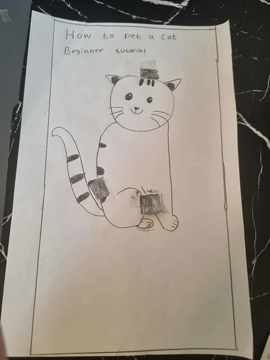
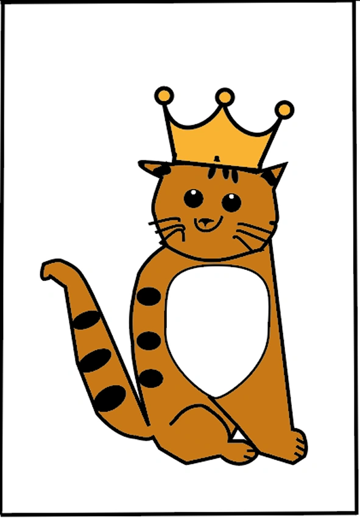
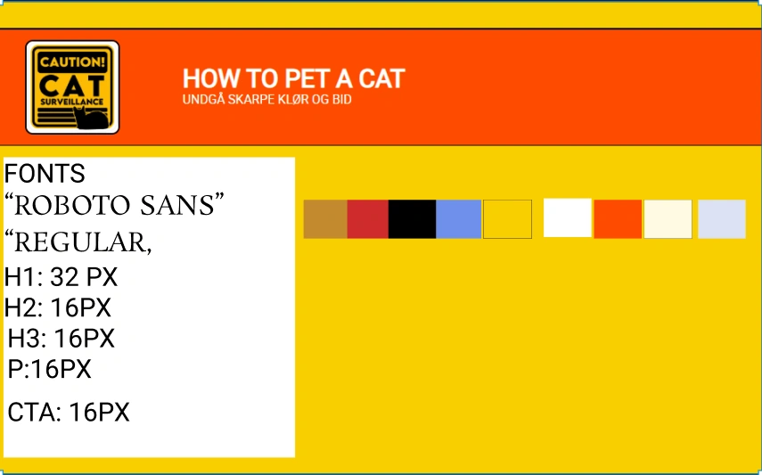
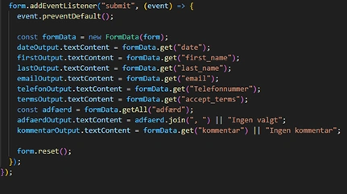
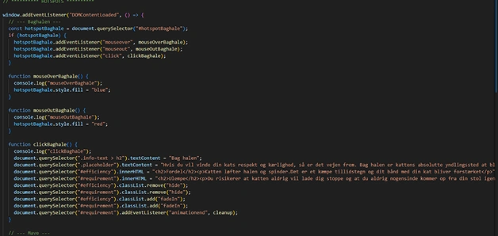
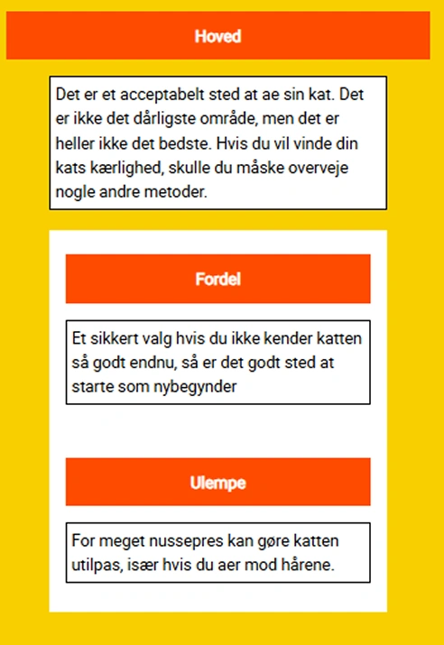
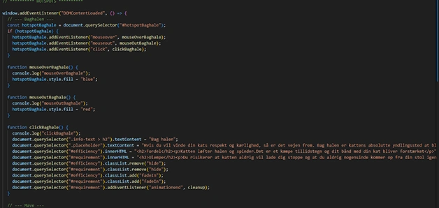
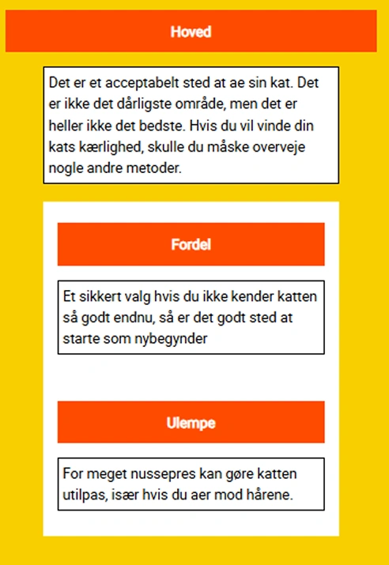
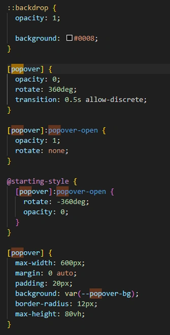
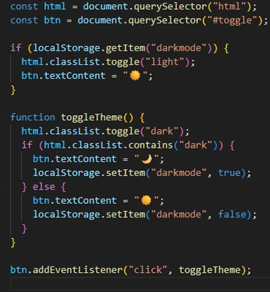

Tema 4 Grundlæggende JS
Kort introduktion
På dette tema blev vi introduceret til Javascript, Adobe Illustrator, CSS animationer og Javascript animationer.
Jeg vil komme ind på den læring, jeg har fået gennem dette tema og hvordan jeg har anvendt læringen på mit Emergency website
Formålet
Formålet med dette tema var, at vi havde fået tildelt et allerede opbygget fundament, hvor vi havde fået til opgave at skulle udarbejde vores egen emergency side via bl.a. brug af Javascript, som vi havde arbejdet med i nogle øvelser i undervisningen.
Proces
Crazy 8 metoden og skitse
Da vi skulle finde på vores eget emne til vores "Emergency site" blev vi undervist i "Crazy 8 metoden", som er en design og idegenerings øvelse, hvor man skitser 8 tegninger i alt på 8 minutter og bruger ca. 1 minut på hver ide. Efter at have kommet med ideer som f.eks. "hvordan man spiser en oreo rigtigt", kom jeg frem til en emergency jeg kaldte for "How to pet a cat", som handler om hvordan man aer sin kat rigtigt og fortjener dens respekt. Da jeg blev enig med mig selv om at det var denne ide, jeg ville gå med, tegnede jeg en papir skitse af, hvordan katten skulle se ud.Jeg arbejdede også på en pitch, der skulle introducere brugeren til emnet. Til sidst skrev jeg også tekst til info boxene på emergency sitet, som vi senere skulle kode ind med hjælp af javascript.
Svg/vektor
Da vi blev undervist i Adobe illustator, skulle vi begynde at tegne over vores skitse og lave et vektor billede. Jeg valgte at katten skulle have en lys brun farve, da jeg blev inspireret af en kat, som jeg havde da jeg var yngre. Jeg valgte også at give den en kongekrone, for at symbolisere at katten er et majestætisk dyr, som man skal gøre sig fortjent til at være i selskab med. Måden jeg lavde kronen på var at jeg tog nogle former og redigerede i det med pen tool, for at jeg kunne få det til at ligne en krone. Efter at billedet var færdigt, skulle vi eksportere billedet som en svg fil, der skulle bruges i forbindelse med kodning til emergency sitet.
Som i de andre temaer, lavde jeg også et styletile, hvor jeg gerne ville have at farverne skulle give indtryk af en advarsel. Jeg mener at gul og orange fungerer bedst til det, da det som regel er de farver man ser på advarsel skilte og breaking news samt fordi de er nogle øjnefaldende farver man lægger mærke til med det samme.
Javascript
Javascript skulle vi bruge i forbindelse med at kunne lave animationer på hotspotsene og få dem til at skifte tekst når man klikker på dem. Ved at eksportere mit vektor billede fra Adobe Illustrator, lavede jeg det til en svg fil, der indeholder kode og ved hjælp af layers i Illustrator brugte jeg dem sammen med javascriptet til at snakke sammen med billedet og lægge animation til. Derudover har jeg også brugt javascript til forms siden, hvor koden I kan se her, gør at når man udfylder rubrikkerne i kontaktformularen, bliver det automatisk vist i den hvide section ved hjælp af javascript koden, som I kan se her.
 



Popovers og darkmode
Efter vi blev præsenteret for at CSS kan bruges til at lave animationer, udarbejdede jeg "Popovers" og gav dem en rotation på 360 grader, så de drejer hele vejen rundt, når man aktiverer dem på knappen. Grunden til at jeg valgte den skulle dreje 360 grader, skyldtes at jeg blev inspireret af det klasiske batman show, der indholder et roterende avisblad og i forbindelse med at sektionen på emergency sitet allerede hed "breaking news" var det en perfekt ide at få med. Der er også lagt en backdrop på, så når man aktiverer popoveren, bliver resten af hjemmesiden gemt bag en mørk baggrund.
Til sidst lavde jeg en darkmode version af siden. Da nogle brugere ikke er begejstrede for sider som er meget lyse, kunne jeg ved at lave en darkmode version eventuelt også styrke UX-UI. Darkmode er lavet med Javascript som snakker sammen med hele HTML siden og så har jeg lavet en knap så brugerne kan skifte imellem light- og darkmode. Knappen til at skifte imellem dark og lightmode er udstyret med en sol og et månesymbol. Det fandt jeg mere spændende at benytte mig af i stedet for bare tekst og jeg mener også at det gør det mere klart og tydeligt hvad det symboliserer.Jeg valgte en blå og grå farve, da det ikke er så skarpe farver og det beroliger øjnene når man kigger på hjemmesiden. Dette vil opfylde nogle brugeres behov og jeg blev i øvrigt inspireret af googels dark mode.
Hvad er Javascript
JavaScript er et programmeringssprog som primært bruges til at gøre hjemmesider interaktive og dynamiske. Det kører i brugerens webbrowser og kan reagere på brugerhandlinger som klik, tastetryk og formularinput. Med JavaScript kan man f.eks. ændre indhold på en side uden at genindlæse den, validere formularer og lave animationer. Sammen med HTML (struktur) og CSS (design) er JavaScript en af de tre grundlæggende teknologier på internettet.
Hvad er Vektor
Inden for design er en vektor en type grafik som er baseret på matematiske beregninger i stedet for pixels. Vektorgrafik består af linjer, kurver og former som er defineret af punkter og retninger. Fordelen ved vektorer er, at grafikken kan skaleres op og ned uden at miste kvalitet, hvilket gør dem ideelle til logoer, ikoner, illustrationer og typografi.
Løsning
Med værktøjer som Adobe illustator, Javascript og CSS animationer, har jeg lavet en emergency hjemmeside, som klart viser hvilken emergency der er tale som og med de valgte farver og font, er den også meget i øjnefaldende.
Det færdige resultat kan ses her:

Læring
På dette tema har jeg lært en del omkring Javascript og dens vigtighed for hjemmesider, da den gør det muligt at kunne skabe interaktive elementer på hjemmesider. Jeg synes dog stadig Javascript kan være udfordrende at arbejde med, men eftersom at man også kan lave animationer med CSS bliver det nemmere, da sproget i CSS er nemmere at forstå. Jeg har også lært, hvordan man bruger Adobe Illustator med pen tool. Det giver god mulighed for en masse kreatitvitet når jeg skal designe hjemmesider fremadrettet og det er også rigtig smart at man kan lave sine billeder til koder, som gør det nemt at tilføje dem på hjemmesider.